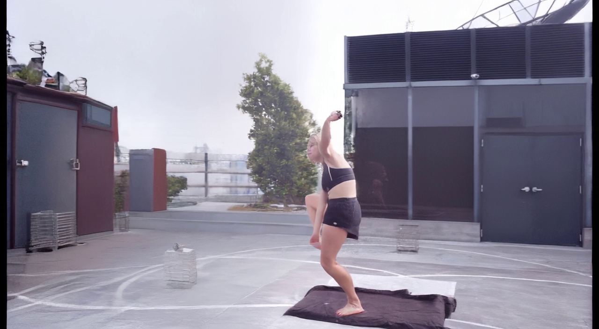

共同首帧是你确认的上一轮 DD Stage2 原生末帧。原视频参考从 f845 到 f1091，共 247 帧；每条结果必须保留全部 247 帧才能显示为可验收。四个原生窗口顺序衔接，各方法用自己上一窗口的末帧作为下一窗口起点。此页只显示本轮完整余段结果，旧站的 21 帧局部结果不计入。首帧对应 Stage2 末帧 f845，随后覆盖原片 f846–f1091 的 246 帧动作。
姿态控制说明：严格三维投影在 f925 后随人物靠近镜头而逐渐出画；旧关节残差两行保留这一失败对照。新“连续关节跟随”行以及 FlashMotion、TTM、VideoX-Fun、VACE 使用同一 f925 标定的二维跟随补足后段动作，属于屏幕空间近似，并非后段真实三维目标视角标签。NLF+FlashMotion 则使用官方 NLF 三维网格并按帧跟随取景。
共同输入：DD 右转 45° Stage2 原生末帧基模：Wan2.2 TI2V-5B＋DepthDirector LoRA；动作参考：原视频 f845–f1091 共 247 帧；DD 原生输出 15 fps，网页按原视频 29.97 fps 播放。
基模输入审计：原片 f845 为抬膝，当前 DD Stage2 末帧已变成落腿站姿，首帧与动作参考不一致；目标视角 dw_mask 在首个 81 帧窗口平均有效覆盖仅 37.1%。权重、原片帧范围、固定相机和窗口衔接核验通过，但这组结果不能代表姿态对齐、几何条件充分时的 DD 基模质量。
DD Stage3 原始 prompt：At the fixed new camera viewpoint shown by the supplied first frame, continue the exact order of person and object actions from the supplied source video after the highlight frame. Maintain the same person's identity, clothing, pose continuity, background geometry and lighting. The camera must stay stationary at this new viewpoint. Do not keep the action frozen, invent different motion, change the person, move the camera, or rebuild the scene.

与原视频对应帧并排查看 · 原片完整剩余动作